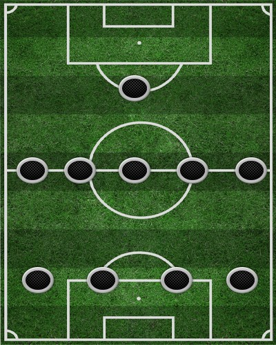

Схема 4-5-1 (“тотальний футбол”)
Останнім часом це формування набуло великої популярності, будучи суто оборонним, а в нападі команди грають в основному на контратаках. При грі «4-5-1» центральна зона укомплектована трьома центральними півзахисниками, один із них зазвичай сідає нижче, а два інших трохи вище, утворюючи трикутник. На крайніх півзахисниках покладається великий обсяг роботи: коли їхня команда атакує – вони повинні бігти вперед, коли обороняється – відходити назад, допомагаючи в обороні.
Подібну тактику часто використовує Жозе Моурінью, який продемонстрував з лондонським «Челсі» як треба здобувати мінімальну перемогу, зберігаючи свої ворота зачиненими.
Поточна позиція команди: 3
Найкращий бомбардир: Русин (16)
Найкращий асистент: Гереро (7)